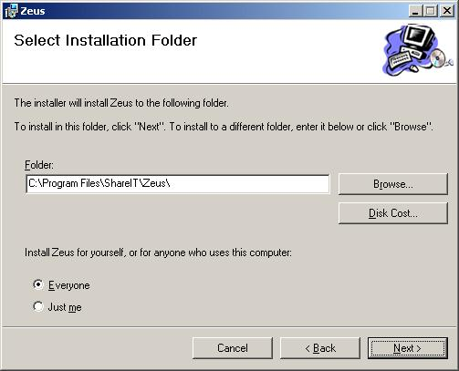

Instalare Zeus
Instalarea se face prin programul "setup.exe" sau "Zeus Setup.msi".
Urmarind instructiunile care apar Zeus se instaleaza in sistem in mod transparent.
Aplicatia Zeus consta in doua librarii (zeus.dll si zipaes.dll) care se inregistreaza cu Windows Explorer.
Sistemul trebuie sa fie restartat pentru ca instalarea sa aiba efect.
In meniul de Start apare Zeus care are doar o referinta la fisierele de ajutor.
Cerinte sistem
Zeus este capabil sa ruleze pe orice versiune Windows 2000/XP/Vista daca si numai daca cel care instaleaza are drepturi de administrator.
Daca iconita de suprapunere nu apare reporniti calculatorul sau doar "explorer.exe" (din "Task Manager").